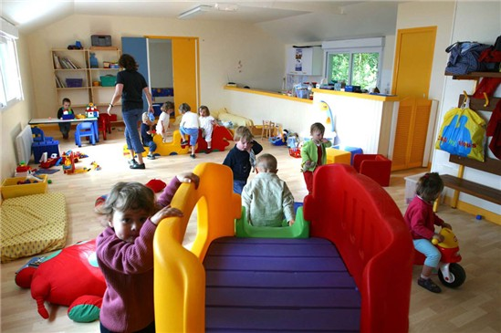

Atras
Inicio
Siguiente

Nuestra misión es proporcionar a los hijos de las madres trabajadoras aseguradas,
padres viudos, divorciados o de aquél al que judicialmente se le ha otorgado la custodia de sus hijos e hijas;
todos aquellos elementos que favorezcan su desarrollo integral a través de programas de alto valor educativo, nutricional, de preservación y de fomento a la salud,
así como satisfacer la demanda mediante la ampliación de cobertura.
Nuestra visión es promover el desarrollo integral de los niños y niñas,
mediante la aplicación de modelos educativos vanguardistas con personal calificado que proporcione el servicio con calidad,
respeto y calidez; en instalaciones seguras y funcionales,
que se adapten a las necesidades de la demanda con procesos automatizados y estandarizados que permitan evaluar su desempeño en el progreso del menor.